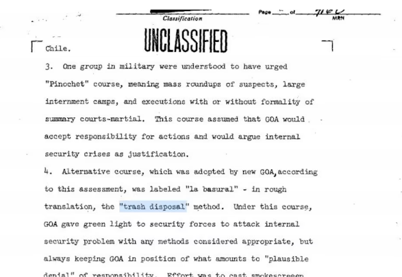

texto texto texto texto
texto texto texto texto
texto texto texto texto
 "El basural", llamaron los militares al método que permitía que las Fuerzas Armadas y de Seguridad secuestraran e hicieran desaparecer personastexto texto texto texto
Cuando Mafalda también padeció la Censura. "Mafalda permite entender diferentes fenómenos como la identidad de la clase media, la polarización política y la restauración democrática"
Un disco marcado por la época, el espanto y la desolación, que relata el infierno reciente y abraza una esperanza en tiempos convulsionados.
"El twist del mono liso, "La cigarra", "Gilito de Barrio Norte", "Manuelita la tortuga" fueron unas de las obras censuradas de María Elena Walsh durante la dictadura militar argentina.
“Periodistas, trabajadores de prensa y gráficos desaparecidos: una lista en construcción” Pasados 43 años del golpe cívico militar, el número de víctimas llega a 228.